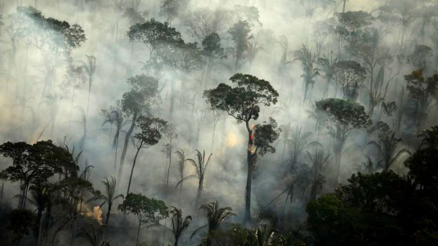
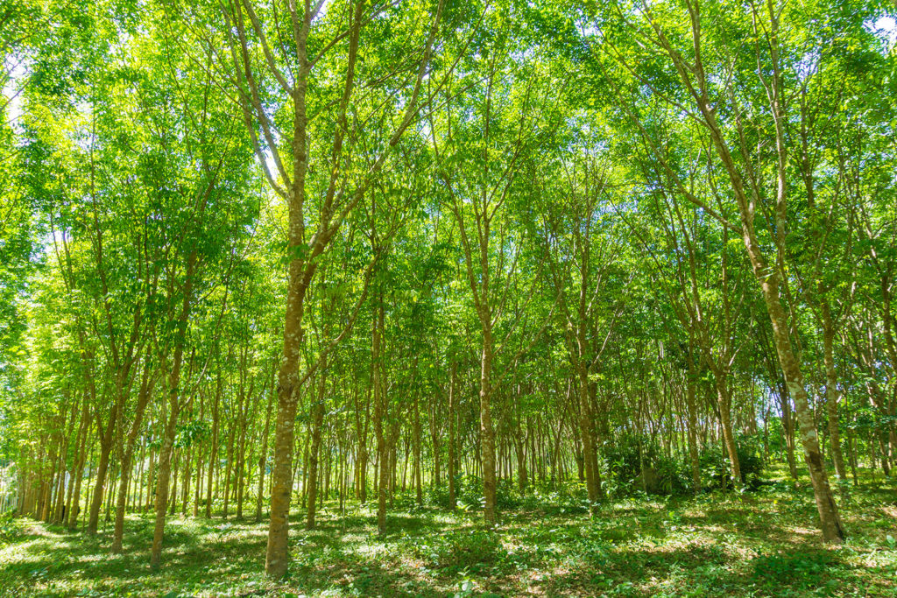
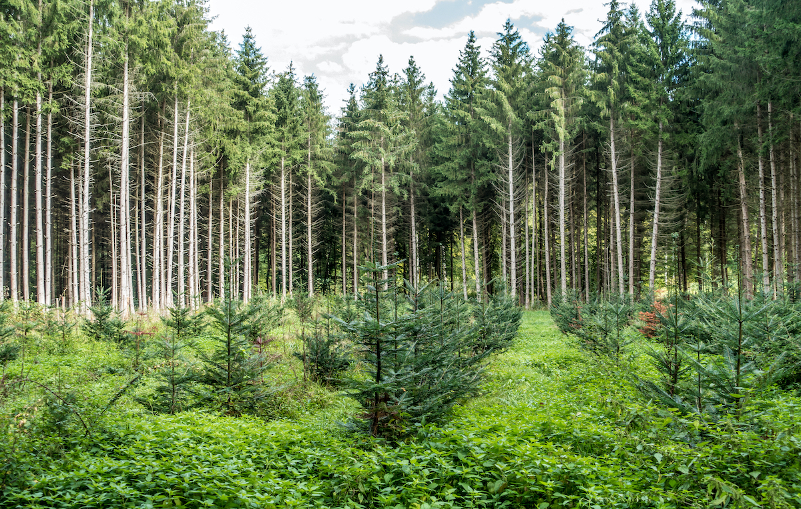

Desmatamento em floresta da Indonésia
O desmatamento é um dos mais graves problemas ambientais do nosso tempo. Além de devastar as florestas e os recursos naturais, ele compromete o equilíbrio do planeta em seus diversos elementos, incluindo os ecossistemas, afetando gravemente também a economia e a sociedade. O desmatamento, também chamado de desflorestação ou desflorestamento, consiste na retirada total ou parcial das árvores, florestas e demais vegetações de uma determinada região.
Cerca de 75% das nossas emissões de CO2 vêm do desmatamento e de queimadas, que liberam o carbono acumulado na biomassa das árvores.
A expansão agropecuária, a atividade mineradora, o aumento da exploração dos recursos naturais pela procura por matéria-prima, a intensa urbanização e aumento das queimadas, acidentais ou intencionais, entre outros, são os grandes causadores da devastação ambiental provocada pelo desmatamento.
De acordo com dados do Programa das Nações Unidas para o Meio Ambiente (Pnuma), cerca de 1,6 bilhão de pessoas ganham a vida em alguma atividade ligada às florestas, e cerca de 60 milhões de indígenas em todo o mundo dependem exclusivamente delas para sua subsistência. Elas ainda são o habitat de muitas espécies de animais e plantas.
Queimada na Amazônia
Veja esta manchete original do site wwf.org.br: "Mais de 80% do desmatamento futuro estarão concentrados em apenas 11 lugares, afirma o relatório da Rede WWF". Segundo o relatório onze lugares do mundo – dos quais 10 estão localizados na região tropical – serão responsáveis por mais de 80% da perda mundial de florestas até 2030, de acordo com uma pesquisa divulgada hoje pela Rede WWF. Até 170 milhões de hectares de florestas poderão desaparecer entre 2010 e 2030 nessas “frentes do desmatamento”, caso se mantenha a tendência atual, segundo as descobertas reveladas no último capítulo da série Relatório Florestas Vivas, da Rede WWF. Essas frentes estão localizadas na Amazônia, na Mata Atlântica e no Grande Chaco (Bolívia, Paraguai e Argentina), em Bornéu, no Cerrado, no Choco-Darien (no Oeste do Equador), na Bacia do Congo, na África Oriental, no Leste da Austrália, no Grande Mekong, na Nova Guiné e em Sumatra.
Em alguns casos, após a degradação, a vegetação consegue se regenerar sozinha, em processos naturais. Entretanto, a maioria dos ecossistemas são tão degradados e desgastados que eles sozinhos não são capazes de se recuperar. O reflorestamento de vegetação nativa tem como objetivo a restauração ecológica, ou seja, é uma intervenção por meio do plantio de espécies nativas para recompor um ecossistema. Reflorestar é importante para proteger e recuperar os serviços ecossistêmicos da região – lembrando que ainda não é possível refazer um ecossistema idêntico ao original.
 Para o plantio, geralmente são escolhidas espécies de acordo com a vegetação natural do local, também são escolhidas árvores frutíferas e com floração atraente para atrair animais e insetos para realizar a dispersão de sementes. Um fator muito importante para o sucesso do projeto de reflorestamento é a diversidade de espécies por hectare.
Saiba mais acerca dos impactos do desmatamento na Amazônia brasileira em: https://www.wwf.org.br/natureza_brasileira/areas_prioritarias/amazonia1/ameacas_riscos_amazonia/desmatamento_na_amazonia/